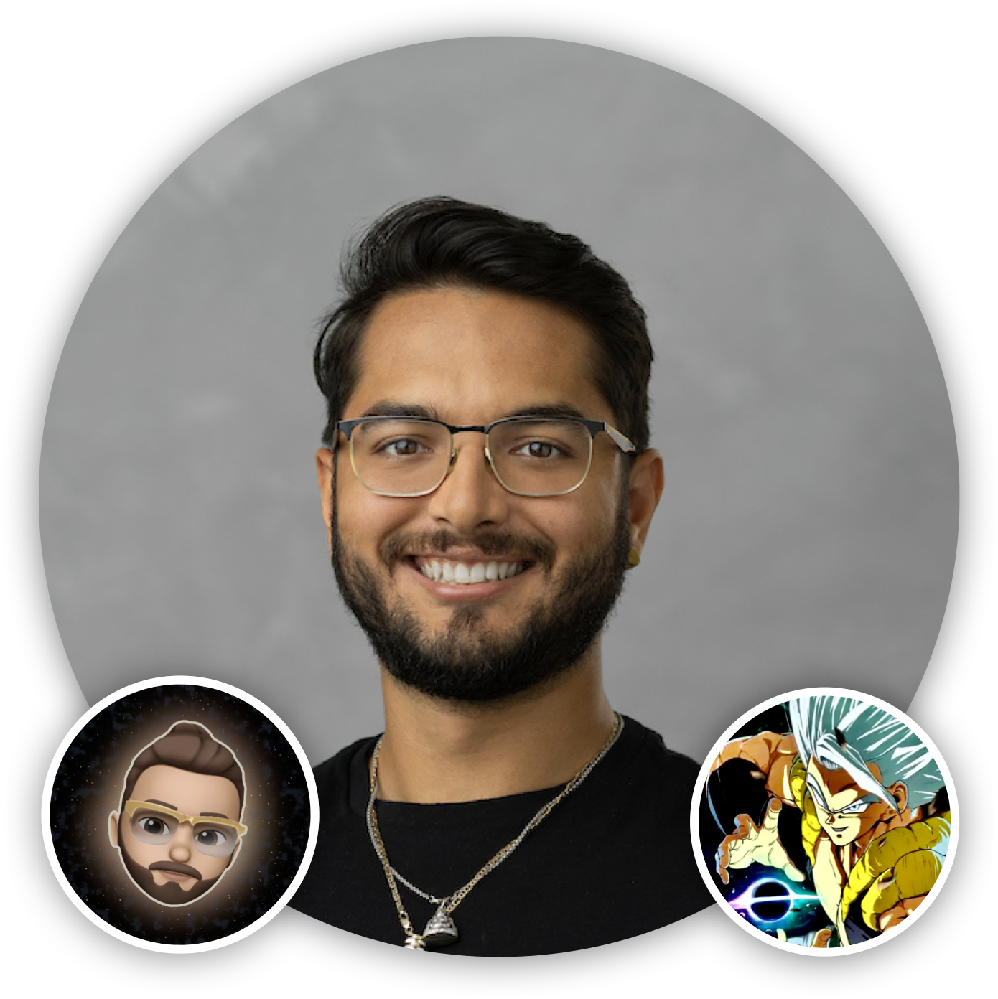

< Back to Team Page
Osvaldo D. Rivera, PhD
Principal Investigator

Osvaldo is a bioinformatics scientist currently focused on elucidating gene regulation and function in the context of cancer and complex disease. He's been performing peer-reviewed scientific research since the age of 16. He earned a Bachelor's degree in Cell and Molecular Biology from Universidad Metropolitana, Puerto Rico. Sponsored by NSF REU programs he worked on cross-disciplinary nanomaterials research under the mentorship of Dr. Oliva Primera-Pedrozo. As an undergraduate, Osvaldo also performed research across diverse fields such as neurobiology, enzymology, and finally cancer biology at the University of Vermont, Iowa State University and the University of Pennsylvania respectively. Osvaldo's inherent interest in computation eventually led him to explore and commit to the field of Bioinformatics, with the intent of deciphering gene regulatory networks using high-throughput sequencing. Osvaldo received an NSF-GRFP Fellowship award in Life Sciences in Bioninformatics to sponsor his graduate research. He continued to earn a Ph.D. in Cell and Molecular Biology with a focus on Cancer Biology from the University of Pennsylvania under the mentorships of Dr. Yoseph Barash and Dr. Kristen W. Lynch. The main focus of his thesis research was to integrate computational methods to decipher patterns of gene dysregulation via alternative RNA splicing in acute myeloid leukemia. Osvaldo went on to contribute to an RNA genomics startup company, Eclipse Bioinnovations, where he contributed to R&D of eRibo, an eCLIP-based RNAseq technology used to study ribosome occupancy in conjunction with alternative RNA splicing patterns. Currently as an independent scientist, Osvaldo is building bioinformatics research efforts to reanalyze publicly available data to further elucidate gene regulatory patterns across various cellular contexts. Osvaldo also assists biolabs studying complex disease by performing transcriptomics research and establishing in-house data analysis pipelines.